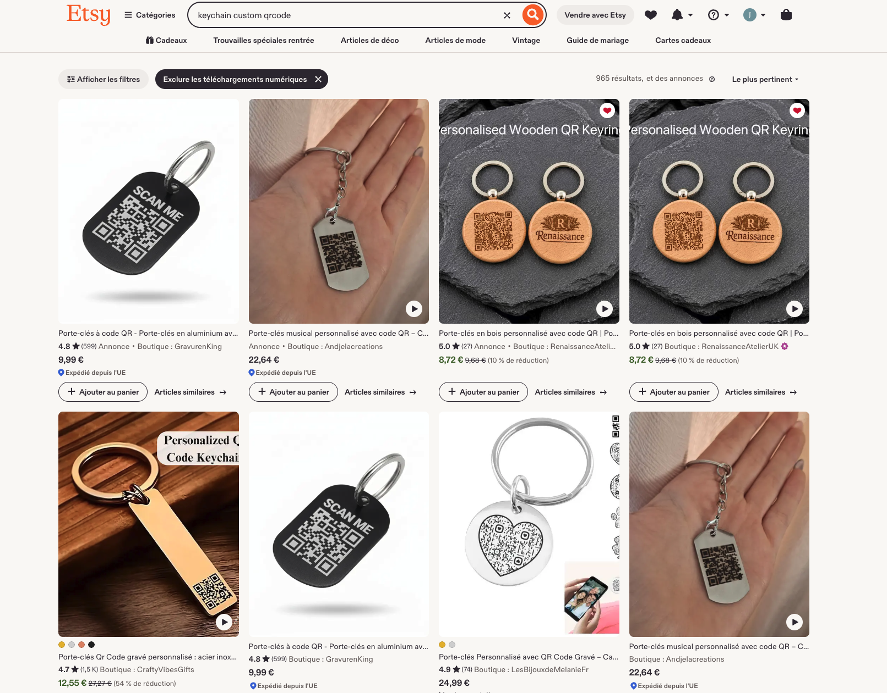
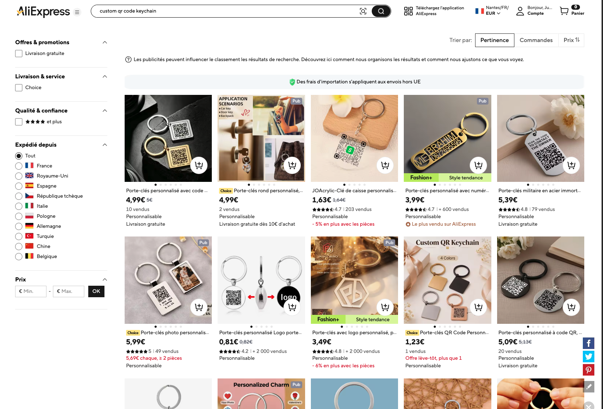

3. Distribute Shares¶
The best way to distribute your shares is to use the QR code format, especially when you have generated a long secret.
To create a share, you have as many options as you can think of. For example, a share can be:
- a printed paper with the QR code
- a paper containing the shares as raw numbers and letters
- a sticker
This document focuses on the best practices for creating a share that respects your full privacy, is easily shared, and stays reliable over time.
How to craft a share (method 1)¶
1. Find a vendor¶
The first criterion is easy sharing. To achieve that, I'd recommend turning the QR code into an object that won't end up in the bin one day or another.
Etsy and Aliexpress are great places to find people or companies that craft custom key chains or other jewellery with text and QR codes.
Try entering key words like "custom qr code key chain" or "qr code key chain" and you'll quickly find vendors offering such services relatively cheap :


To respect the second most important criterion (the privacy) I'd recommend not crafting all your shares by the same vendors, because that would basically means giving it your secret (not cool).
2. Label your shares¶
Another criterion is that your shares should stay reliable over time. That's why I'd recommend labeling each share with all the information needed to understand what it is and how to use it — so that if someone finds it 10 years from now, they'll still be able to make sense of it.
The ideal solution is to attach a written note that explains, in plain words, what the share is about. In practice, though, that's hard to keep on a small object.
This is why you should also add a short text on the key chain customization that describes what the share is about.
Note: Keep in mind that such a description is limited by the size of the keychain, so it shouldn't exceed about 20 words.
This means you must embed only the essential information in the label:
- What the secret is about,
- Who the person is that holds this secret,
- When the secret was created,
- Which relic-core version was used at the time.
For example, a label could look like this:
Bitcoin wallet recovery — belongs to Alice — created on 2026-08-12 — relic-core v1.2.3 — scan the QR code and enter your shares to recover the seed.
Or something shorter like:
Now here is an array of acronyms proposition that you could use to describes what the secret is about:
| Acronym | Description |
|---|---|
| Gmail | Gm |
| Fb | |
| 1Password | 1P |
| Trezor Wallet | TW |
| Ledger Wallet | Ldg |
| Bitwarden | Bw |
| Proton mail | Pm |
| Coinbase | Cb |
| Dashlane | Dl |
| Keepass | Kp |
| ... | ... |
TBD: photo of a key chain containing the shares
How to craft a share (method 2)¶
Note: If you have another method in mind that could be added to this document, please read contribution.md so that we can make Relic evolve.
How to distribute shares¶
Now that you have crafted your shares, here are some rules to follow when deciding who will be responsible for part of your secret.
1. No geographical restrictions¶
The main rule is that your shares should not all be stored in the same place. If you keep them all at home and your house catches fire, you'll lose every share in one go.
In the same way, if you hold valuable assets like cryptocurrency, you'll want to avoid giving potential thieves a single place to break into and find all your shares at once.
2. Not too many to your close family¶
Another rule is that you should not give your shares to too many people that know each other well.
This is the same problem as producing them all in the same place: you risk having people join forces against you and use the shares against you.
After all, you can never be sure how your relationships will evolve in the future.
3. Don't wait to Recreate the missing shares¶
As soon as you realize a share is missing among the people keeping them, use Relic again to recreate your secret's shares with the ones that aren't lost at the moment.
Don't wait until most of them are lost — by then it will be too late, and your secret will be gone forever.
My personal rule is to keep 2 shares on a threshold of 3, so that I only need one other person to recreate the secret (which is relatively easy to do).